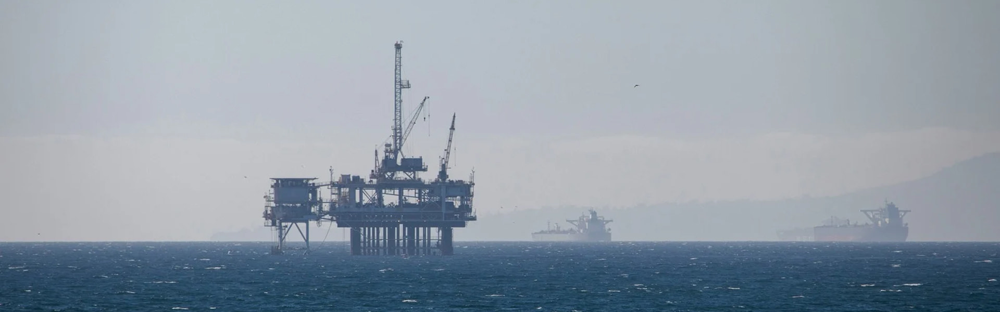

Sectors
Industrial infrastructure is an interconnected ecosystem, and Ynanch Hyzmat operates across the disciplines that keep it functioning
Overview
Modern industry relies on the seamless interaction of multiple sectors, where the performance of one directly influences the success of another. Ynanch Hyzmat supports this interconnected industrial ecosystem by delivering engineering and technical solutions across the oil & gas, petrochemical, energy, construction, and infrastructure sectors. This multidisciplinary expertise enables us to address complex project requirements through integrated solutions that improve operational efficiency, reliability, and long-term asset performance.
-

Oil and Gas
From upstream production facilities to processing, transportation, and storage infrastructure, Ynanch Hyzmat supports the oil and gas industry with engineering, maintenance, automation, and project execution services that help operators maintain safe, efficient, and reliable operations.
-

Energy and Power
Reliable power infrastructure is essential for industrial growth and economic development. Ynanch Hyzmat supports power generation, transmission, and distribution facilities through engineering solutions, maintenance programs, electrical systems integration, and technical support services.
-

Petrochemistry
Petrochemical facilities require precise process control, dependable equipment performance, and strict safety standards. Ynanch Hyzmat delivers technical solutions that help operators maintain efficient production, improve reliability, and support long-term asset performance.
-

Civil Construction
Industrial development depends on robust infrastructure and quality construction. Ynanch Hyzmat supports industrial and infrastructure projects through engineering, construction, project management, and technical services that ensure facilities are built to perform safely and reliably throughout their lifecycle.
Turkmenistan
Building terrain…